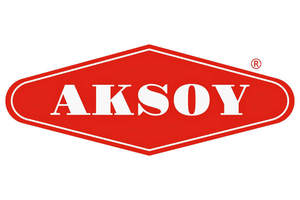

Trade Mark Journal No.2025/011 14 March 2025
UK00004165966 26 February 2025 (1,5,8,9,16,18,21,22,25,32,33,35,38,39,41,42,43,44,45)

- Class 1
- Chemicals for use in industry, science and photography, as well as in agriculture, horticulture and forestry; unprocessed artificial resins, unprocessed plastics; fire extinguishing and fire prevention compositions; tempering and soldering preparations; substances for tanning animal skins and hides; adhesives for use in industry; putties and other paste fillers; compost, manures, fertilizers; biological preparations for use in industry and science. .
- Class 5
- Pharmaceuticals, medical and veterinary preparations; sanitary preparations for medical purposes; dietetic food and substances adapted for medical or veterinary use, food for babies; dietary supplements for humans and animals; plasters, materials for dressings; material for stopping teeth, dental wax; disinfectants; preparations for destroying vermin; fungicides, herbicides; absorbent cotton / absorbent wadding; acne treatment preparations; adhesive plasters / sticking plasters; adhesive tapes for medical purposes / adhesive bands for medical purposes; adhesives for dentures; adjuvants for medical purposes; air purifying preparations; air deodorising preparations; albumin dietary supplements; albuminous foodstuffs for medical purposes; alcohol for pharmaceutical purposes; alginate dietary supplements; almond milk for pharmaceutical purposes; aloe vera preparations for pharmaceutical purposes; aluminium acetate for pharmaceutical purposes; amino acids for medical purposes; amino acids for veterinary purposes; antibacterial soap; antibacterial handwashes; antioxidant pills; antiparasitic preparations; antiparasitic collars for animals; antiseptic cotton; antiseptics; appetite suppressants for medical purposes; appetite suppressant pills; aseptic cotton; asthmatic tea; babies' diapers [napkins] / babies' napkins [diapers]; babies' napkin-pants [diaper-pants] / babies' diaper-pants / babies' napkin-pants; balms for medical purposes; bandages for dressings; bath salts for medical purposes; belts for sanitary napkins [towels]; breast-nursing pads; bunion pads; preparations for callouses; camphor oil for medical purposes; candy, medicated; capsules for medicines; casein dietary supplements; castor oil for medical purposes; charcoal for pharmaceutical purposes; chewing gum for medical purposes; cod liver oil; collagen for medical purposes; compresses; solutions for contact lenses / solutions for use with contact lenses; contact lens cleaning preparations; cooling sprays for medical purposes; corn rings for the feet; corn remedies; cotton for medical purposes; cotton swabs for medical purposes / cotton sticks for medical purposes; deodorants for clothing and textiles; detergents for medical purposes; diabetic bread adapted for medical use; diagnostic preparations for medical purposes; diapers for pets; dietary fibre / dietary fiber; dietary supplements for animals; dietetic foods adapted for medical purposes; dietetic beverages adapted for medical purposes; dietetic substances adapted for medical use; digestives for pharmaceutical purposes; disinfectant soap; disinfectants for hygiene purposes; dog washes [insecticides]; douching preparations for medical purposes; first-aid boxes, filled; fly catching paper; food for babies; gauze for dressings; herbal teas for medicinal purposes; herbal extracts for medical purposes; herbicides / preparations for destroying noxious plants / weedkillers; hydrogen peroxide for medical purposes; infant formula; insect repellents; insect repellent incense; insecticidal animal shampoo; insecticidal veterinary washes; laxatives; lice treatment preparations [pediculicides]; linseed dietary supplements / flaxseed dietary supplements; linseed oil dietary supplements / flaxseed oil dietary supplements; lotions for pharmaceutical purposes; lotions for veterinary purposes; malted milk beverages for medical purposes; medical preparations for slimming purposes; medicated eye-washes; medicated animal feed; medicated dentifrices; medicated after-shave lotions; medicated shampoos; medicated toiletry preparations; medicated hair lotions; medicated dry shampoos; medicated shampoos for pets; medicated soap; medicinal alcohol; medicinal mud / medicinal sediment [mud]; medicinal infusions; medicinal tea; medicinal oils; medicinal herbs; medicinal roots; medicinal drinks; medicinal hair growth preparations; medicine cases, portable, filled; medicines for alleviating constipation; medicines for dental purposes; medicines for human purposes; medicines for veterinary purposes; menstruation bandages / sanitary pads; mineral waters for medical purposes; mineral water salts; mineral food supplements; mothproofing preparations; mothproofing paper / mothproof paper; mouthwashes for medical purposes; mud for baths; napkins for incontinents / diapers for incontinents; nutritional supplements; oil of turpentine for pharmaceutical purposes; ointments for pharmaceutical purposes; pants, absorbent, for incontinents; panty liners [sanitary]; pastilles for pharmaceutical purposes / lozenges for pharmaceutical purposes; pearl powder for medical purposes; pectin for pharmaceutical purposes; pesticides; petroleum jelly for medical purposes; pharmaceutical preparations; pharmaceutical preparations for treating sunburn; pharmaceutical preparations for skin care; pharmaceutical preparations for treating dandruff; pharmaceuticals; plant extracts for pharmaceutical purposes; powdered milk for babies; pre-filled syringes for medical purposes; protein dietary supplements; protein supplements for animals; remedies for foot perspiration; remedies for perspiration; repellents for dogs; salts for mineral water baths; salts for medical purposes; sanitary panties / menstruation knickers / sanitary knickers / sanitary pants; sanitary tampons / menstruation tampons; sanitary towels / sanitary napkins; sea water for medicinal bathing; serums; slimming pills; smelling salts; sodium salts for medical purposes; sterilising preparations; sugar for medical purposes; sunburn ointments; tanning pills; therapeutic preparations for the bath; tissues impregnated with pharmaceutical lotions; tonics [medicines]; preparations for the treatment of burns; veterinary preparations; vine disease treating chemicals; vitamin preparations; wart pencils; wheat germ dietary supplements; yeast dietary supplements. .
- Class 8
- Hand tools and implements (hand-operated); cutlery; razors; baby spoons, table forks and table knives; beard clippers; blade sharpening instruments; blades for planes; blades [hand tools]; ceramic knives; choppers [knives]; cleavers; crimping irons; cuticle tweezers / cuticle nippers; cutters; cutting tools [hand tools]; implements for decanting liquids [hand tools]; depilation appliances, electric and non-electric; diggers [hand tools]; egg slicers, non-electric; emery files; emery boards; eyelash curlers; fingernail polishers, electric or non-electric / nail buffers, electric or non-electric; flat irons; fruit pickers [hand tools]; garden tools, hand-operated; grindstones [hand tools] / sharpening wheels [hand tools]; hair clippers for personal use, electric and non-electric; hair clippers for animals [hand instruments]; hair-removing tweezers; hand implements for hair curling; ice picks; insecticide vaporizers [hand tools] / insecticide atomizers [hand tools] / insecticide sprayers [hand tools]; irons [non-electric hand tools]; knife handles; knives; ladles [hand tools]; mallets [hand instruments]; manicure sets; manicure sets, electric; mincing knives [hand tools] / fleshing knives [hand tools] / meat choppers [hand tools]; mortars for pounding [hand tools]; nail files; nail files, electric; nail clippers, electric or non-electric; oyster openers; paring knives; pedicure sets; pincers / nippers / tongs; pizza cutters, non-electric; plastic spoons, table forks and table knives; pruning scissors / secateurs; pruning shears; pruning knives; rammers [hand tools] / pestles for pounding [hand tools]; razor strops; razor cases; razor blades; razors, electric or non-electric; disposable razors; safety razors; scaling knives; scissors; scrapers [hand tools]; sharpening stones; sharpening steels / knife steels; sharpening instruments; shaving cases; shear blades; shearers [hand instruments]; shears; silver plate [knives, forks and spoons]; instruments and tools for skinning animals; spatulas [hand tools]; spatulas for use by artists; spoons; table cutlery [knives, forks and spoons] / tableware [knives, forks and spoons]; table forks; tap wrenches; tin openers, non-electric / can openers, non-electric; tweezers; vegetable slicers / vegetable knives / vegetable shredders; vegetable choppers. .
- Class 9
- Scientific, nautical, surveying, photographic, cinematographic, optical, weighing, measuring, signalling, checking (supervision), life-saving and teaching apparatus and instruments; apparatus and instruments for conducting, switching, transforming, accumulating, regulating or controlling electricity; apparatus for recording, transmission or reproduction of sound or images; magnetic data carriers, recording discs; compact discs, DVDs and other digital recording media; mechanisms for coin-operated apparatus; cash registers, calculating machines, data processing equipment, computers; computer software; fire-extinguishing apparatus; software; portable and handheld electronic devices for transmitting, storing, manipulating, recording, and reviewing text, images, audio, video and data, including via global computer networks, wireless networks, and electronic communications networks and electronic and mechanical parts and fittings therefor; tablet computers, electronic book readers, audio and video players, electronic personal organizers, personal digital assistants, and global positioning system devices and electronic and mechanical parts and fittings therefor; computer peripheral devices; monitors, displays, wires, cables, modems, printers, disk drives, adapters, adapter cards, cable connectors, plug-in connectors, electrical power connectors, docking stations, and drivers; battery chargers; battery packs; memory cards and memory card readers; speakers, microphones, and headsets; cases, covers, and stands for computers; cases, covers, and stands for portable and handheld electronic devices for transmitting, storing, manipulating, recording, and reviewing text, images, sound, audio, video and data, including via global computer networks; cases, covers, and stands for tablet computers, electronic book readers, audio and video players, electronic personal organizers, personal digital assistants, and global positioning system devices and devices for the display of electronically published materials, namely, books, journals, newspapers, magazines, multimedia presentations; remote controls for portable and handheld electronic devices and computers; terminals for electronically processing credit card payments; apparatus for electronic payment processing; electronic payment terminal; power adapters; USB cables; electronic docking stations; electrical connectors, wires, cables, and adaptors; wireless remote controls for portable electronic devices and computers; headphones and earphones; data synchronization programs, and application development tool programs for personal and handheld computers; computer software for authoring, downloading, transmitting, receiving, editing, extracting, encoding, decoding, displaying, storing and organizing text, graphics, images, and electronic publications; electronic publications concerning goods and services offered to small business owners and shoppers; downloadable pre-recorded audio and audiovisual content, information, and commentary; downloadable electronic books, magazines, periodicals, newsletters, newspapers, journals, and other publications; downloadable electronic publications in the nature of fiction, non-fiction, comics and screenplays via computer and communications networks; downloadable films and movies featuring fiction and non-fiction stories provided via computer and communications networks; downloadable templates for designing books, short stories, storyboards, screenplays, comics, audio and video files; computer software for the collection, editing, organizing, modifying, book marking, transmission, storage and sharing of data and information; downloadable audiobooks and digital audio files; software in the field of text, image and sound transmission and display; database management software; character recognition software; voice recognition software; electronic mail and messaging software; computer software for accessing, browsing and searching online databases; electronic bulletin boards; data synchronization software; application development software; parts and fittings for all the aforesaid goods; barcode scanners; a software program, namely an interactive software development tool and run-time environment used to create and develop software applications to provide access to corporate, business, leisure, local and central government, intergovernmental organisations, education, information, non-profit making organisations data and systems using internet and using other network technologies; apparatus and instruments for reproducing sound, images or data; television apparatus and instruments; interactive electronic apparatus in the nature of cameras, video cameras, televisions, mobile phones, tablet computers, laptop computers, computers, global positioning system devices, electronic book readers; remote control units for any of the aforesaid goods; cleaning apparatus for magnetic or optical data media; cleaning apparatus for use with apparatus for recording or reproducing audio, video or data; electrical power supplies; transformers; batteries; cases and cabinets adapted for the storage of magnetic or optical data media; magnetic or optical data media, recording discs; sound recordings; video recordings; cinematographic films; exposed photographic films or slides; pre-recorded computer software; pre-recorded software for use with interactive electronic apparatus, game apparatus or amusement apparatus; software, computer software, software products, software operating systems and computer programs, except an interactive software development tool and run-time environment used to create and develop software applications to provide access to corporate, business, leisure, local and central government, intergovernmental organisations, education, information, non-profit making organisations data and systems using internet and using other network technologies; computers, computer hardware, computer firmware, computer software, microcomputers; computer peripheral devices, printers, terminals, monitors, visual display units, keyboards; data storage apparatus, magnetic and optical discs and drives, tape drives; apparatus, products, programs and software for word, data and image processing, information collection, management, presentation and control, databases, database management, computer aided design, work management, telecommunication, datacommunication, radio, television, network communication and management, messaging, multimedia applications management, presentation and control; power cords, power chargers; battery charging devices for portable and handheld electronic devices; electrical, audio, and wires, printers, and connectors; Cases, covers, stands, skins, speakers, accessories, monitors, printers, displays, and keyboards for portable electronic devices; blank computer discs; blank digital storage media; blank electronic storage media; blank smart cards; computer cables; calculators; camera cases; camera tripods; computer mice; computer network routers and hubs; computer accessories, namely, computer leads for external computer cabling in the nature of firewire leads, USB leads; USB-HUBS; flash card readers; projectors, namely, sound projectors and amplifiers; DVD burners; DVD drives; computer peripherals in the nature of wireless cards; media players; media player components and accessories, namely, protective covers and cases for portable media players, chargers, electrical and power cables; video electronics components and accessories, namely, electrical and power cables and chargers; digital electronic components and accessories, namely, holsters, carrying cases, and fitted plastic films known as skins for covering and providing a scratch proof barrier or protection specifically designed for computers, digital audio and media players, MP3 players, mobile phones, personal digital assistants; video electronics and components and accessories therefore in the nature of cords, adapters, battery chargers, peripherals, and styluses; video cables; extension cables; electrical and power cables; converters; USB hardware; computer and memory storage devices, namely, blank flash drives, USB drives, digital USB storage cards and card readers; printer components and accessories, namely, cables; electronic books; Computer software for accessing movies, TV shows, videos and music; downloadable audio, video and audiovisual content provided via computer and communications networks featuring movies, TV shows, videos and music; downloadable digital audio files featuring music, news, voice and spoken word; Computer game programs; Computer game software; Game software; Interactive game software; Interactive game programs; Computer application software for mobile devices, internet browsers, set-top boxes, electronic readers, and tablet computers, namely, software for video games and general interest software applications for shopping, product comparison, entertainment, news, task management, personal management, music and videos; Computer-software development tools; telephones, mobile phones, videophones, cameras; monitors for television receiver; television receivers [TV sets] and television transmitters; remote controllers for television receiver [TV set]; electronic notepads; magnetic data carriers; radio receivers; radio transmitters; video cameras; computer hardware and software; computer software and firmware, namely, operating system programs, data synchronization programs, in the nature of application development tool programs for personal and handheld computers and mobile digital electronic devices; telephony management software, mobile telephone, smartphone and tablet software; telephone-based information retrieval software and hardware; software for the redirection of messages; computer application software for mobile phones, smart phones and tablet devices featuring mobile phone functionality; computer application software and embedded computer application software for mobile phones, smart phones and tablet devices namely, software that enables photos and videos from cameras found on mobile phones, smart phones and tablet devices to be shared in social media for social networking purposes; computer programs for accessing, browsing and searching online databases; computer hardware and software for providing integrated telephone communication with computerized global information networks; parts and accessories for handheld and mobile digital electronic devices; parts and accessories for mobile telephones, smartphones and tablets in the nature of covers, cases, cases made of leather or imitations of leather, covers made of cloth or textile materials, batteries, rechargeable batteries, chargers, chargers for electric batteries, data cables, power cables, headphones, stereo headphones, inear headphones, stereo speakers, audio speakers, audio speakers for home, headsets for wireless communication apparatus; personal stereo speaker apparatus; microphones; car audio apparatus; apparatus for connecting and charging portable and handheld digital electronic devices; user manuals in electronically readable, machine readable or computer readable form for use with, and sold as a unit with, all the aforementioned goods; downloadable software for accessing and managing of computer applications over a global computer network; set-top boxes. .
- Class 16
- Paper and cardboard; printed matter; bookbinding material; photographs; stationery and office requisites, except furniture; adhesives for stationery or household purposes; artists' and drawing materials; paintbrushes; instructional and teaching materials; plastic sheets, films and bags for wrapping and packaging; printers' type, printing block; absorbent sheets of paper or plastic for foodstuff packaging; address stamps; address plates for addressing machines; addressing machines; adhesive tape dispensers [office requisites]; adhesive tapes for stationery or household purposes; adhesive bands for stationery or household purposes; adhesives [glues] for stationery or household purposes; advertisement boards of paper or cardboard; albums / scrapbooks; almanacs; announcement cards [stationery]; aquarelles / watercolors [paintings] / watercolours [paintings]; architects' models; arithmetical tables / calculating tables; artists' watercolour saucers / artists' watercolor saucers; atlases; bags [envelopes, pouches] of paper or plastics, for packaging; bags for microwave cooking; balls for ball-point pens; banknotes; banners of paper; bibs of paper; binding strips [bookbinding]; biological samples for use in microscopy [teaching materials]; blackboards; blotters; blueprints / plans; bookbinding apparatus and machines [office equipment]; bookends; booklets; bookmarkers; books; bottle envelopes of paper or cardboard; bottle wrappers of paper or cardboard; boxes of paper or cardboard; bunting of paper; cabinets for stationery [office requisites]; calendars; canvas for painting; carbon paper; cardboard; cardboard tubes; cards / charts; cases for stamps [seals]; catalogues; chalk for lithography; chalk holders; charcoal pencils; chart pointers, non-electronic; chromolithographs [chromos] / chromos; cigar bands; clipboards; clips for offices / staples for offices; cloth for bookbinding / bookbinding cloth; coasters of paper; comic books; compasses for drawing; composing frames [printing]; composing sticks; conical paper bags; copying paper [stationery]; cords for bookbinding / bookbinding cords; correcting fluids [office requisites]; correcting ink [heliography]; correcting tapes [office requisites]; covers [stationery] / wrappers [stationery]; cream containers of paper; credit card imprinters, non-electric; desk mats; diagrams; document files [stationery]; document laminators for office use; document holders [stationery]; drawer liners of paper, perfumed or not; drawing pads; drawing pins / thumbtacks; drawing boards; drawing materials; drawing instruments; drawing sets; drawing pens; drawing rulers; duplicators; elastic bands for offices; electrocardiograph paper; electrotypes; embroidery designs [patterns]; engraving plates; engravings; envelope sealing machines for offices; envelopes [stationery]; erasing products; erasing shields; etching needles; etchings; fabrics for bookbinding; face towels of paper; figurines [statuettes] of papier mâché; files [office requisites]; filter paper; filtering materials [paper]; finger-stalls [office requisites]; flags of paper; flower-pot covers of paper / covers of paper for flower pots; flyers; folders for papers / jackets for papers; folders [stationery]; forms, printed; fountain pens; franking machines for office use / postage meters for office use; French curves; galley racks [printing]; garbage bags of paper or of plastics; geographical maps; glue for stationery or household purposes / pastes for stationery or household purposes; gluten [glue] for stationery or household purposes; graining combs; graphic prints; graphic reproductions; graphic representations; greeting cards; gummed tape [stationery]; gummed cloth for stationery purposes; gums [adhesives] for stationery or household purposes; hand labelling appliances; hand-rests for painters; handkerchiefs of paper; handwriting specimens for copying; hat boxes of cardboard; hectographs; histological sections for teaching purposes; holders for stamps [seals]; holders for checkbooks [cheque books]; house painters' rollers; humidity control sheets of paper or plastic for foodstuff packaging; index cards [stationery]; indexes; Indian inks; ink; ink sticks; ink stones [ink reservoirs]; inking pads; inking ribbons; inking sheets for duplicators; inking sheets for document reproducing machines; inking ribbons for computer printers; inkstands; inkwells; isinglass for stationery or household purposes; labels of paper or cardboard; ledgers [books]; letter trays; lithographic works of art; lithographic stones; lithographs; loose-leaf binders; magazines [periodicals]; manifolds [stationery]; manuals [handbooks] / handbooks [manuals]; marking chalk; marking pens [stationery]; mats for beer glasses; mimeograph apparatus and machines; modelling clay; modelling wax, not for dental purposes; modelling materials; modelling paste; moisteners [office requisites]; moisteners for gummed surfaces [office requisites]; money clips; moulds for modelling clays [artists' materials] / molds for modelling clays [artists' materials]; apparatus for mounting photographs; musical greeting cards; newsletters; newspapers; nibs; nibs of gold; note books; numbering apparatus; numbers [type]; obliterating stamps; office perforators; office requisites, except furniture; oleographs; packaging material made of starches; packing [cushioning, stuffing] materials of paper or cardboard; pads [stationery]; page holders; paint boxes [articles for use in school]; paint trays; painters' brushes; painters' easels; paintings [pictures], framed or unframed; palettes for painters; pamphlets; pantographs [drawing instruments]; paper; paper for recording machines; paper sheets [stationery]; paper clasps; luminous paper; paper tapes and cards for the recordal of computer programmes; paper for radiograms; paper ribbons; paper shredders for office use; paper knives [cutters] [office requisites] / paper cutters [office requisites] / paper knives [office requisites]; paper coffee filters; paper bows; paper-clips; paperweights; papier mâché; parchment paper; passport holders; pastels [crayons]; pen clips; pen cases / boxes for pens; pen wipers; pencil sharpening machines, electric or non-electric; pencil leads; pencil holders; pencil lead holders; pencil sharpeners, electric or non-electric; pencils; penholders; pens [office requisites]; perforated cards for Jacquard looms; periodicals; photo-engravings; photograph stands; photographs [printed]; pictures; placards of paper or cardboard; place mats of paper; plastic film for wrapping; plastic bubble packs for wrapping or packaging; plastic cling film, extensible, for palletization; plastic bags for pet waste disposal; plastics for modelling; polymer modelling clay; portraits; postage stamps; postcards; posters; printed timetables; printed publications; printed coupons; printed sheet music; printers' blankets, not of textile; printers' reglets; printing blocks; printing type; printing sets, portable [office requisites]; prints [engravings]; prospectuses; punches [office requisites]; rice paper; rollers for typewriters; rubber erasers; school supplies [stationery]; scrapers [erasers] for offices; sealing stamps; sealing wax; sealing machines for offices; sealing compounds for stationery purposes; sealing wafers; seals [stamps]; self-adhesive tapes for stationery or household purposes; sewing patterns; sheets of reclaimed cellulose for wrapping; shields [paper seals]; signboards of paper or cardboard; silver paper; slate pencils; song books; spools for inking ribbons; spray chalk; square rulers for drawing; squares for drawing; stamp pads; stamp stands; stamps [seals]; stands for pens and pencils; stapling presses [office requisites]; starch paste [adhesive] for stationery or household purposes; stationery; steatite [tailor's chalk]; steel letters; steel pens; stencil cases; stencil plates; stencils [stationery]; stencils; stickers [stationery]; stuffing of paper or cardboard; T-squares for drawing; table linen of paper; table napkins of paper; table runners of paper; tablecloths of paper; tablemats of paper; tags for index cards; tailors' chalk; teaching materials [except apparatus]; terrestrial globes; tickets; tissues of paper for removing make-up; toilet paper / hygienic paper; towels of paper; tracing patterns; tracing paper; tracing cloth; tracing needles for drawing purposes; trading cards, other than for games; transfers [decalcomanias] / decalcomanias; transparencies [stationery]; trays for sorting and counting money; type [numerals and letters] / letters [type]; typewriter ribbons; typewriter keys; typewriters, electric or non-electric; vignetting apparatus; viscose sheets for wrapping; washi; waxed paper; wood pulp board [stationery]; wood pulp paper; wrapping paper / packing paper; wristbands for the retention of writing instruments; writing slates; writing or drawing books; writing chalk; writing materials; writing paper; writing cases [stationery]; writing cases [sets]; writing brushes; writing instruments; writing board erasers; Xuan paper for Chinese painting and calligraphy.
- Class 18
- Leather and imitations of leather; animal skins and hides; luggage and carrying bags; umbrellas and parasols; walking sticks; whips, harness and saddlery; collars, leashes and clothing for animals. .
- Class 21
- Household or kitchen utensils and containers; combs and sponges; brushes, except paintbrushes; brush-making materials; articles for cleaning purposes; unworked or semi-worked glass, except building glass; glassware, porcelain and earthenware; abrasive pads for kitchen purposes; abrasive sponges for scrubbing the skin; animal bristles [brushware]; aquarium hoods; electric devices for attracting and killing insects; autoclaves, non-electric, for cooking / pressure cookers, non-electric; baby baths, portable; baking mats; basins [receptacles]; baskets for household purposes; basting spoons [cooking utensils]; basting brushes; beaters, non-electric; beer mugs; bird baths; birdcages; blenders, non-electric, for household purposes; boot jacks; boot trees [stretchers]; bottle openers, electric and non-electric; bottles; bowls [basins] / basins [bowls]; boxes for dispensing paper towels; boxes of glass; bread baskets for household purposes; bread boards; bread bins; broom handles; brooms; brush goods; material for brush-making; brushes; brushes for footwear; electric brushes, except parts of machines; brushes for cleaning tanks and containers; buckets / pails; buckets made of woven fabrics; bulb basters; busts of porcelain, ceramic, earthenware or glass; butter dishes; butter-dish covers; buttonhooks; cabarets [trays]; cages for household pets; cake molds [moulds]; candelabra [candlesticks] / candlesticks; candle rings; candle extinguishers; candle jars [holders]; candy boxes / boxes for sweetmeats; car washing mitts; carpet beaters [hand instruments]; carpet sweepers; cauldrons; ceramics for household purposes; chamber pots; chamois leather for cleaning / buckskin for cleaning / skins of chamois for cleaning; cheese-dish covers; china ornaments; chopsticks; cinder sifters [household utensils]; cleaning instruments, hand-operated; cleaning tow; closures for pot lids; cloth for washing floors; clothes-pegs / clothes-pins; clothing stretchers / stretchers for clothing; coasters, not of paper or textile; cocktail shakers; cocktail stirrers; coffee grinders, hand-operated; coffee services [tableware]; coffee filters, non-electric; coffee percolators, non-electric; coffeepots, non-electric; coin banks; cold packs for chilling food and beverages; comb cases; combs for animals; combs; electric combs; confectioners' decorating bags [pastry bags]; containers for household or kitchen use; cookery molds [moulds]; cookie [biscuit] cutters; cookie jars; cooking pot sets; cooking skewers of metal / cooking pins of metal; cooking pots; cooking utensils, non-electric; corkscrews, electric and non-electric; cosmetic utensils; cosmetic spatulas; cotton waste for cleaning; cruet sets for oil and vinegar; cruets; crumb trays; crushers for kitchen use, non-electric; crystal [glassware]; cups; cups of paper or plastic; currycombs; cutting boards for the kitchen; decanter tags; decanters; deep fryers, non-electric; demijohns / carboys; deodorising apparatus for personal use; dish covers / covers for dishes; dishes; dishwashing brushes; disposable table plates; drinking troughs; drinking vessels; drinking horns; drinking bottles for sports; drinking glasses; dripping pans; drying racks for laundry; dustbins / garbage cans / refuse bins / trash cans; dusting apparatus, non-electric; dusting cloths [rags]; earthenware / crockery; earthenware saucepans; egg cups; egg separators, non-electric, for household purposes; enamelled glass, not for building; epergnes; eyebrow brushes; eyelash brushes; feather-dusters; feeding troughs; fibreglass, other than for insulation or textile use / fiberglass, other than for insulation or textile use; fibreglass thread, not for textile use / fiberglass thread, not for textile use; figurines [statuettes] of porcelain, ceramic, earthenware or glass / statuettes of porcelain, ceramic, earthenware or glass; flasks; flat-iron stands; floss for dental purposes; flower pots; flower-pot covers, not of paper / covers, not of paper, for flower pots; fly swatters; fly traps; foam toe separators for use in pedicures; food steamers, non-electric; fruit cups; fruit presses, non-electric, for household purposes; frying pans; funnels; furniture dusters; fused silica [semi-worked product], other than for building; gardening gloves; garlic presses [kitchen utensils]; glass bulbs [receptacles] / glass vials [receptacles]; glass flasks [containers]; glass jars [carboys]; glass stoppers / glass caps; glass bowls; glass, unworked or semi-worked, except building glass; glass wool, other than for insulation; glass incorporating fine electrical conductors; glass for vehicle windows [semi-finished product]; glasses [receptacles]; glove stretchers; gloves for household purposes; glue-pots; graters for kitchen use; grill supports / gridiron supports; grills [cooking utensils] / griddles [cooking utensils]; hair for brushes; heads for electric toothbrushes; heat-insulated containers for beverages; heat-insulated containers; heaters for feeding bottles, non-electric; hip flasks; holders for flowers and plants [flower arranging]; horse brushes; horsehair for brush-making; hot pots, not electrically heated; ice cube molds [moulds] / ice cube molds / ice cube moulds; ice buckets / coolers [ice pails] / ice pails; ice tongs; ice cream scoops; indoor terrariums [plant cultivation]; indoor aquaria / tanks [indoor aquaria]; indoor terrariums [vivariums]; insect traps; insulating flasks / vacuum bottles; ironing board covers, shaped; ironing boards; isothermic bags; jugs / pitchers; kettles, non-electric; kitchen grinders, non-electric; kitchen containers; kitchen utensils; knife rests for the table; ladles for serving wine; lamp-glass brushes; large-toothed combs for the hair; lazy susans; lint removers, electric or non-electric; liqueur sets; litter boxes for pets / litter trays for pets; lunch boxes; majolica; make-up removing appliances; make-up sponges; make-up brushes; mangers for animals; menu card holders; mess-tins; mills for household purposes, hand-operated; mixing spoons [kitchen utensils]; mop wringers; mop wringer buckets; mops; mortars for kitchen use; mosaics of glass, not for building; moulds [kitchen utensils] / molds [kitchen utensils]; mouse traps; mugs; nail brushes; napkin rings; nest eggs, artificial; noodle machines, hand-operated; nozzles for watering hose; nozzles for watering cans / roses for watering cans; nutcrackers; opal glass; opaline glass; oven mitts / barbecue mitts / kitchen mitts; painted glassware; paper plates; pastry cutters; pepper mills, hand-operated; pepper pots; perfume burners; perfume vaporizers / perfume sprayers; pestles for kitchen use; fitted picnic baskets, including dishes; pie servers / tart scoops; pig bristles for brush-making; piggy banks; pipettes [wine-tasters] / wine tasters [siphons]; place mats, not of paper or textile; plate glass [raw material]; plates to prevent milk boiling over; plug-in diffusers for mosquito repellents; plungers for clearing blocked drains; polishing leather; polishing apparatus and machines, for household purposes, non-electric; polishing materials for making shiny, except preparations, paper and stone; polishing gloves; polishing cloths; porcelain ware; portable cool boxes, non-electric / portable coolers, non-electric; pot lids; potholders; pots; pottery; poultry rings; pouring spouts; powder puffs; powder compacts; powdered glass for decoration; rags [cloth] for cleaning / cloths for cleaning / rags for cleaning; rat traps; refrigerating bottles; reusable ice cubes; rings for birds; rolling pins, domestic; salad bowls; salad tongs; salt cellars / salt shakers; saucepan scourers of metal; saucers; scoops for household purposes; scouring pads / pads for cleaning; scrubbing brushes; services [dishes]; serving ladles; shaving brushes; shaving brush stands / stands for shaving brushes; shoe trees [stretchers]; shoe horns; sieves [household utensils]; sifters [household utensils]; signboards of porcelain or glass; siphon bottles for carbonated water; ski wax brushes; smoke absorbers for household purposes; soap boxes; soap dispensers; soap holders / dishes for soap; soup bowls; spatulas for kitchen use; spice sets; sponge holders; sponges for household purposes; sprinklers; statues of porcelain, ceramic, earthenware or glass; steel wool for cleaning; stew-pans; strainers for household purposes; straws for drinking / drinking straws; sugar bowls; sugar tongs; syringes for watering flowers and plants / sprinklers for watering flowers and plants; table napkin holders; table plates; tablemats, not of paper or textile; tableware, other than knives, forks and spoons; tankards; tar-brushes, long handled; tea caddies; tea services [tableware]; tea infusers / tea balls; tea strainers; tea cosies; teapots; thermally insulated containers for food; tie presses; toilet brushes; toilet cases / fitted vanity cases; toilet paper dispensers; toilet sponges; toilet utensils; toilet paper holders; toothbrushes; toothbrushes, electric; toothpick holders; toothpicks; tortilla presses, non-electric [kitchen utensils]; towel rails and rings / rails and rings for towels; trays of paper, for household purposes; trays for household purposes; trivets [table utensils]; trouser presses; urns; utensils for household purposes; vases; vegetable dishes; vessels of metal for making ices and iced drinks; vitreous silica fibers [fibres], not for textile use; waffle irons, non-electric; washing boards; washtubs; waste paper baskets; water apparatus for cleaning teeth and gums; watering devices / sprinkling devices; watering cans; apparatus for wax-polishing, non-electric; wax-polishing appliances, non-electric, for shoes; whisks, non-electric, for household purposes; window-boxes; wine aerators; wool waste for cleaning; works of art of porcelain, ceramic, earthenware or glass; multipurpose wiping cloth for use with infants and toddlers. .
- Class 22
- Ropes and string; nets; tents and tarpaulins; awnings of textile or synthetic materials; sails; sacks for the transport and storage of materials in bulk; padding, cushioning and stuffing materials, except of paper, cardboard, rubber or plastics; raw fibrous textile materials and substitutes .
- Class 25
- Clothing; footwear; headgear; albs; ankle boots; aprons [clothing]; ascots; babies' pants [underwear]; bandanas [neckerchiefs]; bath sandals; bath slippers; bath robes; bathing caps; bathing trunks / bathing drawers; bathing suits / swimsuits; beach clothes; beach shoes; belts [clothing]; berets; bibs, not of paper; boas [necklets]; bodices [lingerie]; boot uppers; boots; boots for sports; boxer shorts; brassieres; breeches for wear; camisoles; cap peaks; caps [headwear]; chasubles; clothing; clothing for gymnastics; clothing of imitations of leather; clothing of leather; coats; collars [clothing]; combinations [clothing]; corselets; corsets [underclothing]; cuffs / wristbands [clothing]; cyclists' clothing; detachable collars; dress shields; dresses; dressing gowns; ear muffs [clothing]; esparto shoes or sandals; fishing vests; fittings of metal for footwear; football shoes / football boots; footmuffs, not electrically heated; footwear uppers; fur stoles; furs [clothing]; gabardines [clothing]; galoshes / goloshes; garters; girdles; gloves [clothing]; gymnastic shoes; hairdressing capes; half-boots; hat frames [skeletons]; hats; headbands [clothing]; headgear for wear; heelpieces for stockings; heelpieces for footwear; heels; hoods [clothing]; hosiery; jackets [clothing]; jerseys [clothing]; judo uniforms; jumper dresses / pinafore dresses; karate uniforms; kimonos; knickers / panties; knitwear [clothing]; lace boots; layettes [clothing]; leggings [leg warmers] / leg warmers; leggings [trousers]; leotards; liveries; maniples; mantillas; masquerade costumes; mitres [hats] / miters [hats]; mittens; money belts [clothing]; motorists' clothing; muffs [clothing]; neck scarves [mufflers] / mufflers [neck scarves] / neck scarfs [mufflers]; neckties; non-slipping devices for footwear; outerclothing; overalls / smocks; overcoats / topcoats; paper clothing; paper hats [clothing]; parkas; pelerines; pelisses; petticoats; pocket squares; pockets for clothing; ponchos; pyjamas / pajamas (Am); ready-made clothing; ready-made linings [parts of clothing]; sandals; saris; sarongs; sashes for wear; scarves / scarfs; shawls; shirt fronts; shirt yokes; shirts; shoes; short-sleeve shirts; shower caps; ski boots; ski gloves; skirts; skorts; skull caps; sleep masks; slippers; slips [underclothing]; sock suspenders; socks; inner soles; soles for footwear; spats / gaiters; sports jerseys; sports shoes; sports singlets; stocking suspenders; stockings; studs for football boots; stuff jackets [clothing]; suits; suspenders / braces for clothing [suspenders]; sweat-absorbent stockings; sweat-absorbent underwear / sweat-absorbent underclothing; sweat-absorbent socks; sweaters / jumpers [pullovers] / pullovers; teddies [underclothing] / bodies [underclothing]; tee-shirts; tights; tips for footwear; togas; top hats; trouser straps / gaiter straps; trousers / pants (Am); turbans; underpants; underwear / underclothing; uniforms; valenki [felted boots]; veils [clothing]; visors [headwear]; waistcoats / vests; waterproof clothing; welts for footwear; wet suits for water-skiing; wimples; wooden shoes. .
- Class 32
- Beers; mineral and aerated waters and other non-alcoholic beverages; fruit beverages and fruit juices; syrups and other preparations for making beverages; preparations for making aerated water; aerated water; aloe vera drinks, non-alcoholic; aperitifs, non-alcoholic; beer; beer wort; beer-based cocktails; preparations for making beverages; cider, non-alcoholic; cocktails, non-alcoholic; essences for making beverages; extracts of hops for making beer; fruit juices / fruit juice; fruit nectars, non-alcoholic; ginger beer / ginger ale; grape must, unfermented; isotonic beverages; kvass [non-alcoholic beverage]; lemonades; preparations for making liqueurs; lithia water; malt beer; malt wort; mineral water [beverages]; preparations for making mineral water; must; non-alcoholic fruit extracts; non-alcoholic fruit juice beverages; non-alcoholic beverages; non-alcoholic honey-based beverages; non-alcoholic beverages flavoured with coffee / non-alcoholic beverages flavored with coffee; non-alcoholic beverages flavoured with tea / non-alcoholic beverages flavored with tea; orgeat; pastilles for effervescing beverages; powders for effervescing beverages; protein-enriched sports beverages; rice-based beverages, other than milk substitutes; sarsaparilla [non-alcoholic beverage]; seltzer water; sherbets [beverages] / sorbets [beverages]; smoothies; soda water; soft drinks; soya-based beverages, other than milk substitutes; syrups for beverages; syrups for lemonade; table waters; tomato juice [beverage]; vegetable juices [beverages]; waters [beverages]; whey beverages; sports drinks; energy drinks; concentrates, syrups and powders used in the preparation of energy drinks and fruit-flavored beverages. .
- Class 33
- Alcoholic beverages (except beers); anise [liqueur]; anisette [liqueur]; aperitifs; arrack [arak] / arak [arrack]; baijiu [Chinese distilled alcoholic beverage]; alcoholic beverages, except beer; alcoholic beverages containing fruit; bitters; brandy; cider; cocktails; curacao; digesters [liqueurs and spirits]; distilled beverages; alcoholic essences; alcoholic extracts; fruit extracts, alcoholic; gin; hydromel [mead] / mead [hydromel]; kirsch; liqueurs; nira [sugarcane-based alcoholic beverage]; peppermint liqueurs; perry; piquette; pre-mixed alcoholic beverages, other than beer-based; rice alcohol; rum; sake; spirits [beverages]; vodka; whisky; wine. .
- Class 35
- Advertising; business management; business administration; office functions; import agency services; retail services and online retail services connected with the sale of Ajvar [preserved peppers], Albumen for culinary purposes, Albumin milk, Alginates for culinary purposes, Almonds, ground, Aloe vera prepared for human consumption, Anchovy, Apple purée, Bacon, Beans, preserved, Black pudding, Bone oil, edible, Broth, Broth concentrates, Butter, Buttercream, Caviar, Charcuterie, Cheese, Clams [not live], Cocoa butter, Coconut butter, Coconut, desiccated, Coconut fat and Coconut oil; retail services and online retail services connected with the of sale Compotes, Condensed milk, Corn oil, Cranberry sauce [compote], Crayfish, not live, Cream [dairy products], Croquettes, Crustaceans, not live, Curd, Dates, Edible birds' nests, Edible fats, Edible oils, Eggs, Fat-containing mixtures for bread slices, Fatty substances for the manufacture of edible fats, Fish fillets, Fish meal for human consumption, Fish mousses, Fish, not live, Fish, preserved and Fish, tinned [canned (Am)]; retail services and online retail services connected with the sale of Foods prepared from fish, Frosted fruits, Frozen fruits, Fruit-based snack food, Fruit chips, Fruit jellies, Fruit peel, Fruit, preserved, Fruit preserved in alcohol, Fruit pulp, Fruit salads, Fruit, stewed, Fruits, tinned [canned (Am)], Game, not live, Gelatine, Gherkins, Ginger jam, Ham, Herrings, Hummus [chickpea paste], Isinglass for food, Jams, Jellies for food, Kefir [milk beverage] and Kimchi [fermented vegetable dish]; retail services and online retail services connected with sale the of Kumys [kumyss] [milk beverage], Lard for food, Lecithin for culinary purposes, Lentils, preserved, Linseed oil for culinary purposes, Liver, Liver pâté, Lobsters, not live, Low-fat potato chips, Margarine, Marmalade, Meat, Meat extracts, Meat jellies, Meat, preserved, Meat, tinned [canned (Am)], Milk, Milk beverages, milk predominating, Milk ferments for culinary purposes, Milk products, Milk shakes and Mushrooms, preserved; retail services and online retail services connected with the sale of Mussels, not live, Non-alcoholic egg nog, Nuts, prepared, Olive oil for food, Olives, preserved, Onions, preserved, Oysters, not live, Palm kernel oil for food, Palm oil for food, Peanut butter, Peanuts, processed, Peas, preserved, Pectin for culinary purposes, Piccalilli, Pickles, Pollen prepared as foodstuff, Pork, Potato chips, Potato flakes, Potato fritters, Poultry, not live, Powdered eggs and Prawns, not live; retail services and online retail services connected with the sale of Preparations for making bouillon, Preparations for making soup, Preserved garlic, Processed fish spawn, Processed seeds, Processed sunflower seeds, Prostokvasha [soured milk], Raisins, Rape oil for food, Rennet, Ryazhenka [fermented baked milk], Salmon, Salted fish, Salted meats, Sardines, Sauerkraut, Sausages, Sausages in batter, Sea-cucumbers, not live, Seaweed extracts for food, Sesame oil, Shellfish, not live and Shrimps, not live; retail services and online retail services connected with the sale of Silkworm chrysalis, for human consumption, Smetana [sour cream], Snail eggs for consumption, Soups, Soya beans, preserved, for food, Soya milk [milk substitute], Spiny lobsters, not live, Suet for food, Sunflower oil for food, Tahini [sesame seed paste], Toasted laver, Tofu, Tomato juice for cooking, Tomato purée, Tripe, Truffles, preserved, Tuna fish, Vegetable juices for cooking, Vegetable mousses and Vegetable salads; retail services and online retail services connected with the sale of Vegetable soup preparations, Vegetables, cooked, Vegetables, dried, Vegetables, preserved, Vegetables, tinned [canned (Am)], Whey, Whipped cream, White of eggs, Yogurt, Yolk of eggs, Allspice, Almond confectionery, Almond paste, Aniseed, Aromatic preparations for food, Artificial coffee, Baking powder, Baking soda [bicarbonate of soda for cooking purposes], Barley meal, Bean meal, Bee glue, Beer vinegar and Binding agents for ice cream; retail services and online retail services connected with the sale of Bread, Bread rolls, Breadcrumbs, Buns, Cake frosting [icing], Cake powder, Cakes, Candy, Capers, Caramels [candy], Celery salt, Cereal bars, Cereal-based snack food, Cereal preparations, Cheeseburgers [sandwiches], Chewing gum, Chicory [coffee substitute], Chips [cereal products], Chocolate, Chocolate-based beverages, Chocolate beverages with milk, Chocolate mousses, Chow-chow [condiment], Chutneys [condiments] and Cinnamon [spice]; retail services and online retail services connected with the sale of Cloves [spice], Cocoa, Cocoa-based beverages, Cocoa beverages with milk, Coffee, Coffee-based beverages, Coffee beverages with milk, Coffee flavorings [flavourings], Condiments, Confectionery, Confectionery for decorating Christmas trees, Cookies, Cooking salt, Corn flakes, Corn meal, Corn, milled, Corn, roasted, Couscous [semolina], s, Cream of tartar for culinary purposes, Crushed barley and Crushed oats; retail services and online retail services connected with the sale of Curry [spice], Custard, Dessert mousses [confectionery], Dough, Dressings for salad, Edible ices, Essences for foodstuffs, except etheric essences and essential oils, Farinaceous foods, Ferments for pastes, Flavorings, other than essential oils, Flavorings, other than essential oils, for beverages, Flavorings, other than essential oils, for cakes, Flourmilling products, Fondants [confectionery] and Frozen yogurt [confectionery ices]; retail services and online retail services connected with the sale of Fruit coulis [sauces], Fruit jellies [confectionery], Garden herbs, preserved [seasonings], Ginger [spice], Gingerbread, Glucose for culinary purposes, Gluten additives for culinary purposes, Gluten prepared as foodstuff, Golden syrup, Groats for human food, Gruel, with a milk base, for food, Halvah, Ham glaze, High-protein cereal bars, Hominy, Hominy grits, Honey, Husked barley, Husked oats and Ice cream; retail services and online retail services connected with the sale of Ice for refreshment, Ice, natural or artificial, Iced tea, Infusions, not medicinal, Ketchup [sauce], Leaven, Linseed for human consumption, Liquorice [confectionery], Lozenges [confectionery], Macaroni, Macaroons [pastry], Malt biscuits, Malt extract for food, Malt for human consumption, Maltose, Marinades, Marzipan, Mayonnaise, Meal, Meat gravies, Meat pies, Meat tenderizers, for household purposes and Mint for confectionery; retail services and online retail services connected with the sale of Molasses for food, Muesli, Mustard, Mustard meal, Natural sweeteners, Noodle-based prepared meals, Noodles, Nutmegs, Oat-based food, Oat flakes, Oatmeal, Palm sugar, Pancakes, Pasta, Pasta sauce, Pasties, Pastries, Pastry, Peanut confectionery, Pepper, Peppermint sweets, Peppers [seasonings], Pesto [sauce], Petit-beurre biscuits, Petits fours [cakes], Pies, Pizzas, Popcorn, Potato flour for food, Powders for ice cream and Pralines; retail services and online retail services connected with the sale of Preparations for stiffening whipped cream, Puddings, Quiches, Ravioli, Relish [condiment], Rice, Rice-based snack food, Rice cakes, Royal jelly, Rusks, Saffron [seasoning], Sago, Salt for preserving foodstuffs, Sandwiches, Sauces [condiments], Sausage binding materials, Sea water for cooking, Seasonings, Seaweed [condiment], Semolina, Sorbets [ices], Soya bean paste [condiment], Soya flour, Soya sauce, Spaghetti, Spices and Spring rolls; retail services and online retail services connected with the sale of Star aniseed, Starch for food, Stick liquorice [confectionery], Sugar, Sushi, Sweetmeats [candy], Tabbouleh, Tacos, Tapioca, Tapioca flour for food, Tarts, Tea, Tea-based beverages, Thickening agents for cooking foodstuffs, Tomato sauce, Tortillas, Turmeric for food, Unleavened bread, Unroasted coffee, Vanilla [flavoring] [flavouring] and Vanillin [vanilla substitute]; retail services and online retail services connected with the sale of Vegetal preparations for use as coffee substitutes, Vermicelli [noodles], Vinegar, Waffles, Wheat flour, Wheat germ for human consumption, Yeast, Algae for human or animal consumption, Algarovilla for animal consumption, Almonds [fruits], Aloe vera plants, Animal fattening preparations, Animal foodstuffs, Aromatic sand for pets [litter], Bagasses of cane [raw material], Barley, Beans, fresh, Beet, Berries and fresh fruits; retail services and online retail services connected with the sale of Beverages for pets, Bird food, Bran, Bran mash for animal consumption, Bred stock, Bulbs, Bushes, Cereal seeds, unprocessed, Chestnuts, fresh, Chicory roots, Chicory [salad], Christmas trees, Citrus fruit, Cocoa beans, raw, Coconut shell, Coconuts, Cola nuts, Copra, Crayfish, live, Crustaceans, live, Cucumbers, fresh, Cuttle bone for birds, Dog biscuits, Draff, Edible chews for animals and Eggs for hatching, fertilised; retail services and online retail services connected with the sale of Fish, live, Fish meal for animal consumption, Flax meal [fodder], Flowers, dried, for decoration, Flowers, natural, Fodder, Fruit, fresh, Garden herbs, fresh, Grains [cereals], Grains for animal consumption, Grapes, fresh, Groats for poultry, Hay, Hazelnuts, Hop cones, Hops, Juniper berries, Leeks, fresh, Lemons, fresh, Lentils, fresh, Lettuce, fresh, Lime for animal forage and Linseed for animal consumption; retail services and online retail services connected with the sale of Linseed meal for animal consumption, Lobsters, live, Locust beans, Maize, Maize cake for cattle, Malt for brewing and distilling, Marc, Marrows, Mash for fattening livestock, Meal for animals, Menagerie animals, Mushroom spawn for propagation, Mushrooms, fresh, Mussels, live, Nettles, Nuts [fruits], Oats, Oil cake, Olives, fresh, Onions, fresh vegetables, Oranges, Oysters, live, Palm trees and Palms [leaves of the palm tree]; retail services and online retail services connected with the sale of Peanut cake for animals, Peanut meal for animals, Peanuts, fresh, Peas, fresh, Peppers [plants], Pet food, Pine cones, Plant seeds, Plants, Plants, dried, for decoration, Pollen [raw material], Potatoes, fresh, Poultry, live, Residual products of cereals for animal consumption, Rhubarb, Rice meal for forage, Rice, unprocessed, Roots for food, Rose bushes, Rough cork, Rye, Sea-cucumbers, live and Seed germ for botanical purposes; retail services and online retail services connected with the sale of Seedlings, Sesame, Shellfish, live, Spinach, fresh, Spiny lobsters, live, Sugarcane, Truffles, fresh, Vegetables, fresh, Vine plants, Wheat, Wheat germ for animal consumption, Wreaths of natural flowers, Yeast for animal consumption, Aerated water, Aloe vera drinks, non-alcoholic, Aperitifs, non-alcoholic, Beer, Beer wort, Cider, nonalcoholic, Cocktails, non-alcoholic, Essences for making beverages and Extracts of hops for making beer; retail services and online retail services connected with the sale of Fruit juice, Fruit nectars, non-alcoholic, Ginger ale, Grape must, unfermented, Isotonic beverages, Kvass [non-alcoholic beverage], Lemonades, Lithia water, Malt beer, Malt wort, Milk of almonds [beverage], Mineral water [beverages], Must, Non-alcoholic beverages, Non-alcoholic fruit extracts, Non-alcoholic fruit juice beverages, Non-alcoholic honey-based beverages, Orgeat and Pastilles for effervescing beverages; retail services and online retail services connected with the sale of Peanut milk [non-alcoholic beverage], Powders for effervescing beverages, Preparations for making aerated water, Preparations for making beverages, Preparations for making liqueurs, Preparations for making mineral water, Sarsaparilla [non-alcoholic beverage], Seltzer water, Smoothies, Soda water, Sorbets [beverages], Syrups for beverages, Syrups for lemonade, Table waters, Tomato juice [beverage] and Vegetable juices [beverages]; retail services and online retail services connected with the sale of Waters [beverages], Whey beverages, Alcoholic beverages (except beers), Alcoholic beverages containing fruit, Alcoholic beverages, except beer, Alcoholic essences, Alcoholic extracts, Anise [liqueur], Anisette [liqueur], Aperitifs, Arak [arrack], Bitters, Brandy, Cider, Cocktails, Curacao, Digesters [liqueurs and spirits], Distilled beverages, Fruit extracts, alcoholic and Gin; retail services and online retail services connected with the sale of Hydromel [mead], Kirsch, Liqueurs, Nira [sugarcane-based alcoholic beverage], Peppermint liqueurs, Perry, Piquette, Pre-mixed alcoholic beverages, other than beer-based, Rice alcohol, Rum, Sake, Spirits [beverages], Vodka, Whisky, Wine; management of a retail store and or supermarket; Retail store services in the field of fresh and prepared foods, cosmetics, cleaning supplies, beauty supplies, personal care products, pet products, pet food, tissues, toilet paper, napkins; customer loyalty rewards program for shoppers; information, advisory and consultancy services relating to the aforesaid.
- Class 38
- Telecommunications; telecommunications services, namely, electronic transmission of streamed and downloadable audio and video files via computer and other communications networks; providing on-line electronic bulletin boards for the transmission of messages among computer users in the field of consumer product information; web casting services; delivery of messages by electronic transmission; telecommunication services, namely, electronic transmission of streamed and downloadable audio and video and multimedia content files via computer and other communications networks; audio broadcasting of spoken word, music, concerts and radio programs; wireless broadband communications services; text and numeric digital wireless messaging services; communication via wireless electronic book reader; providing access to an interactive database for transmission of messages among computer users and subscribers concerning music, books, movies, motion pictures, television programs, games, toys, sporting goods, electronics, multimedia presentations, videos and DVDs, and other household and consumer goods, product reviews and purchase information on the internet; electronic transmission of information and data; audio broadcasting and transmission of educational and entertainment digital media; communication services for transmitting, caching, accessing, receiving, downloading, streaming, broadcasting, sharing, displaying, formatting, mirroring and transferring text, images, audio, video and data via telecommunications networks, wireless communications networks, and the internet; providing an internet forum, online chat rooms and online communities for the transmission of messages among computer users; providing access to online directories, databases, current events websites and blogs, and on-line reference materials; providing access to auxiliary devices or electronic devices in the nature of providing telecommunication connectivity services for the transfer of images, messages, audio, visual, audiovisual and multimedia works among e-readers, mobile phones, smartphones, portable electronic devices, portable digital devices, tablets or computers; streaming of audio, visual and audiovisual material via the Internet or other computer or communications network; providing online chat rooms, internet forums and online communities for the transmission of photos, videos, text, data, images and other electronic works; transmission of podcasts; transmission of webcasts; providing an online network that enables users to access and share content, text, visual works, audio works, audiovisual works, literary works, data, files, documents and electronic works; providing on-line network services that enable users to share content, photos, videos, text, data, images and other electronic works relating to entertainment, including, movies, television, audiovisual works, music, audio works, books, theatre, literary works, sporting events, recreational activities, leisure activities, tournaments, art, dance, musicals and exhibitions; providing on-line network services that enable users to share content, photos, videos, text, data, images and other electronic works relating to entertainment, including sports instruction, clubs, radio, comedy, contests, visual works, games, gaming, festivals, museums, parks, cultural events, concerts, publishing, animation, current events, fashion, multimedia presentations, history, language, liberal arts, math, business, science, technology, hobbies, culture, sports, arts, psychology, and philosophy; providing a web site that gives computer users the ability to transmit, cache, receive, download, stream, broadcast, display, format, transfer and share content, text, visual works, audio works, audiovisual works, literary works, data, files, documents and electronic works; providing a web site that gives computer users the ability to transmit, cache, receive, download, stream, broadcast, display, format, transfer and share photos, videos, text, data, images and other electronic works; telecommunications services, namely, providing online electronic bulletin boards for the transmission of messages among computer users concerning entertainment; providing interactive chat rooms for transmission of messages among computer users and subscribers concerning a wide variety of topics; electronic transmission of entertainment reviews and information through computer and communications networks; providing electronic communication of blogs; Providing online chat rooms and electronic bulletin boards; Providing online forums for communication in the field of electronic games; Providing video on-demand transmission of computer games; providing users with telecommunication access time to electronic communications networks with means of identifying, locating, grouping, distributing, and managing data and links to third-party computer servers, computer processors and computer users; provision of telephone directory services; providing an online interactive electronic bulletin board in the field of comic book publishing, entertainment and the entertainment industry; information access, and remote data management for wireless delivery of content to handheld computers, laptops and mobile electronic devices; transmission of electronic vouchers via mobile devices and the internet; transmission of data and of information by electronic means in the nature of computer, cable, radio, teleprinter, teleletter, telephone, mobile phone, electronic mail, microwave, laser beam, communications satellite or electronic communication means; electronic transmission of voice, data and images through a global communications network.
- Class 39
- Transport; packaging and storage of goods; travel arrangement.
- Class 41
- Education; providing of training; entertainment; sporting and cultural activities; conducting fitness classes; conducting guided tours; health club services; publication of books and text; providing recreational facilities; ticket agency services; tutoring; vocational guidance; vocational training; providing classes, seminars and workshops; providing television programs; educational and entertainment services, namely providing classes, seminars and workshops in the fields of food, nutrition, cooking, health, wellness, fitness, lifestyle, personal improvement, medicine, alternative health, wellness, parenting, the environment, science, agriculture, travel, entertainment, restaurants, sports and cultural activities; television programs on the subject of food, nutrition, cooking, health, wellness, fitness, lifestyle, personal improvement, medicine, alternative health, wellness, parenting, the environment, science, agriculture, travel, entertainment, restaurants, sports and cultural activities via global computer networks; providing information in the field of entertainment, sports and cultural activities via a global computer network; providing educational and training information in the fields of wellness, fitness, lifestyle, personal improvement and parenting via global computer networks; providing online newsletters in the fields of food, nutrition, cooking, health, wellness, fitness, lifestyle, personal improvement, medicine, alternative health, wellness, parenting, the environment, science, agriculture, travel, entertainment, restaurants, sports and cultural activities; providing a website featuring non-downloadable publications in the nature of articles and videos in the fields of food, nutrition, cooking, health, wellness, fitness, lifestyle, personal improvement, medicine, alternative health, wellness, parenting, the environment, science, agriculture, travel, entertainment, restaurants, sports and cultural activities; motivational speaker services in the fields of food, nutrition, cooking, health, wellness, fitness, lifestyle, personal improvement, medicine, alternative health, wellness, parenting, the environment, science, agriculture, travel, entertainment, restaurants, sports and cultural activities; providing on-line portals for entertainment in the field of movies, television, audiovisual works, music, audio works, books, theatre, literary works, sporting events, recreational activities, leisure activities, tournaments, art, dance, musicals, exhibitions, sports instruction, clubs, radio, comedy, contests, visual works, games, gaming, festivals, museums, parks, cultural events, concerts, publishing, animation, current events, fashion shows, and multimedia presentations. .
- Class 42
- Providing online non-downloadable software for placing orders for pick-up or delivery service, enabling users to make purchases via mobile device, and enabling users to make electronic payments for purchases; providing online non-downloadable software for locating grocery stores, meal planning, menu planning, generating shopping lists, devising personalized nutrition programs, and sharing digital content; Providing online non-downloadable software for users to participate in a loyalty program, access and manage user's loyalty account, and access discount offers and coupons; Providing online non-downloadable software for offering and distribution of coupons and discount offers downloaded to customers' loyalty card accounts or mobile device, for the purpose of promoting additional targeted savings and rewarding loyalty; Providing online non-downloadable software that enables users to access coupons, loyalty rewards, rebates, price-comparison information, product reviews, and discount information; Providing online non-downloadable software to enable users to access and interact with information in the fields of food, recipes, meal planning, nutrition, cooking, health, wellness, grocery shopping, coupons, and special offerings; providing information in the fields of the environment and science via global computer networks.
- Class 43
- Services for providing food and drink; Temporary accommodation; cafés; cafeterias; canteens; food and drink catering; rental of cooking apparatus; rental of drinking water dispensers; restaurants; self-service restaurants; snack-bars; temporary accommodation reservations; restaurant services; snack bar, coffee bar and coffee house, carry out restaurant, and take out restaurant services; catering services; preparation of carry out foods and beverages; providing information online in the fields of cooking, food preparation, wine, wine and food pairings, ingredients and recipes; providing online information in the fields of restaurants and local food and drink. .
- Class 44
- Medical services; veterinary services; hygienic and beauty care for human beings or animals; agriculture, horticulture and forestry services; alternative medicine services; animal grooming; aromatherapy services; beauty salon services; depilatory waxing; flower arranging; gardening; hairdressing; health spa services; health counselling / health counselling; horticulture; hospice services; landscape gardening; landscape design; manicuring; massage; pet grooming; plant nursery services; rental of sanitation facilities; sauna services; tree planting for carbon offsetting purposes; Turkish bath services; veterinary assistance; wreath making; providing information in the fields of nutrition, health, medicine, alternative health and agriculture via global computer networks.
- Class 45
- Security services for the protection of property and individuals; providing information regarding, and in the nature of, social networking services; online social networking services designed for people with a common desire to meet other people with similar interests; providing on-line computer databases and on-line searchable databases in the field of social networking; copyright management; baby sitting; licensing of intellectual property; baggage inspection for security purposes; licensing of computer software (legal services); providing contacts and facilitating introductions for the purpose of creating and developing productive personal relationships for people with a common desire to meet other people with similar interests; introduction, personal relationship, and social networking services provided via the Internet or other computer or communications network; on-line social networking services, namely, facilitating social introductions or interactions among individuals; online social networking services; online social networking services in the field of entertainment; social networking services in the field of entertainment provided via a website and communications networks; providing a social networking website for entertainment purposes; providing searchable databases in the field of social networking; dating services; on-line social networking services designed for people with a common desire to meet other people with similar interests; providing a website for the purposes of social networking; providing online computer databases and online searchable databases in the field of social networking; providing information in the field of social networking. .
PUSULA LTD.